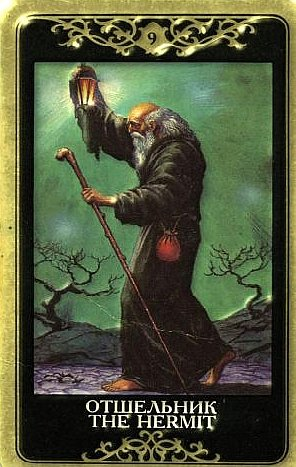

Его появление может намекать, что отношение к жизни стало слишком уж вовлеченным и эмоциональным, и сейчас требуется «исцеление», возвращение на путь истинный, чуть ближе к себе, к своей подлинной природе.
Это не только и не столько вопрос убеждений или совести – Отшельник тем и отличается от Первосвященника, что здесь не идет речь о «понятиях». Здесь речь о нашем стержне.
Отшельник акцентирует стремление замкнуться и потребность в самоанализе, обретение внутреннего мира и собственной правды, следование своим путем.
Он говорит, что пришло время заново оценить свою жизнь, свои цели и связи. Пора чуть отойти от социальной жизни, оставить мелочные заботы и ставшие привычными развлечения: они мешают задуматься о душе.
Каждому человеку требуется период уединения (“отшельничество”), чтобы разобраться наконец в себе самом. Однако это не просто тайм-аут, вообще вибрации Отшельника заметно превосходят Четверку Мечей.
Они возвещают нахождение в своем собственном центре и нахождение своего собственного света.
Это карта духовной самостоятельности и огромной личностной силы, достаточной для того, чтобы идти своим узким путем, несмотря на отсутствие попутчиков (или хотя бы общественного одобрения).
В раскладе это обычно человек, который отказался от участия в чем-либо, «крутит педали назад» и защищается от любых воздействий со стороны. Нужно время, чтобы все для себя выяснить, утвердиться в своем решении.
Торопить его, подталкивать - пустое.
Он все равно все сделает так и тогда, как сочтет нужным и правильным.
Если рядом еще и Справедливость, то не ошибется, что хорошо, а что плохо.
По Отшельнику человек всерьез занят определением своей позиции и своих границ. При этом внешне от него может быть ни слуху, ни духу – ни звонков, ни писем, ни предложений, ни отказов. Он решает, что все это для него значит, зачем оно ему нужно и как далеко он во всем этом готов зайти, будь то любовь или бизнес. Это, пожалуй, самое важное.
Как и Жрица, Отшельник нередко указывает на нечто сокрытое, в данном случае скорее – спрятанное или утраченное, нежели тайное.
Отшельник любит затихариться, спрятаться от глаз, погрузиться на глубину.
Ему нравятся колодцы и фонтаны, пещеры и подземелья, погреба и лестницы, шкафы и сундуки, потайные ящики.
Иногда по Отшельнику происходит поиск (и обретение) учителя, наставника, духовного ведущего, он может говорить о получении ценного совета.
В старинных толкованиях указывается, что Отшельник может предсказывать не только духовное, а и вполне буквальное странствие, путешествие, особенно в какие-то духовно значимые места.
Считается, что как сигнификатор прошлого Отшельник говорит не столько об одиночестве, сколько о стремлении подвести черту под чем-то, что-то забыть.
Приведет ли предвещаемое им временное одиночество к лучшей жизни, покажут другие карты расклада.
Отшельник придает силы и собранность для того, что сконцентрироваться на главном, но только это «главное» запросто может оказаться достижениями сугубо внутреннего характера, и не относится к тем целям, которые расписаны в деловом ежедневнике.
Отшельник не есть карта внешней активности – скорее, карта ухода от нее. По нему редко можно ожидать продвижения в суетных делах.
Отшельник товарищ неспешный, а потому его появление в раскладе может указывать на замедленность процесса.
Вообще же, выпадая в раскладе, Отшельник намекает, что пришло время отринуть мелочные проблемы и суету, поскольку они мешают сконцентрироваться на собственной душе. Спокойный анализ и осмысление своих планов позволят избежать ошибок в дальнейших действиях.
Для людей обычных, например, девушки, расставшейся с мужчиной (“Вернется ли он?” Или: “Скоро ли я выйду замуж?”), означает просто одиночество, по крайней мере в ближайшее время, то есть ответ на «бытовые вопросы» будет отрицательным.
Хотя та же карта дает ей и совет: используй отпущенное тебе одиночество для пользы дела, постарайся вырасти за это время.
Для «небытовых вопросов» Отшельник карта сильная и важная, она действительно подобна фонарю, освещающему трудный путь.
Впрочем, и для эзотериков и вообще людей, заботящихся о своем духовном росте, Отшельник может означать ощущение одиночества оттого, что его бывшие товарищи и близкие перестали понимать его: он ушел вперед, а они остались там же, где были.
Поэтому общаться он может теперь лишь с такими же Отшельниками, но их мало, а поблизости может не быть вообще. Он может, конечно, вернуться назад, но на этом его духовное развитие закончится. Лучше иди вперед, говорит эта карта, покоряй следующие вершины, и ты найдешь новых друзей.
ЛИЧНЫЕ ОТНОШЕНИЯ
Одиночество – очень дорогой товар.
Его одинаково трудно бывает приобрести, когда оно потребно, и сбыть с рук, когда оно надоело.
Выпадая в раскладе, Отшельник сообщает, что вопрошающий, даже если он состоит в отношениях, сейчас больше сконцентрирован на себе и собственном развитии, нежели чем-то ином.
Отшельник не приспосабливается. Он идет своим путем и действительно принадлежит лишь ему.
Поэтому карта нередко возвещает уход своим путем, расставание, разрыв взаимоотношений или как минимум поиск большей самостоятельности, независимости от партнера.
Среди прочего, по ней отменяются свадьбы и разрываются помолвки (на это, конечно, должна быть еще какие-то указания).
Отшельник задумывается о смысле отношений, о своей роли в них, о том, зачем все это надо и соответствует ли его внутреннему ощущению жизненного пути.
В любом случае, плюс Отшельника в том, что он воспринимает вещи серьезно.
Он не станет смотреть на проблемы в отношениях сквозь пальцы и руководствоваться принципом «авось утрясется» (он прекрасно понимает, что вещи имеют обыкновение «утрясаться» в основном по Башне).
Минус же Отшельника в том, что он едва ли кинется активно решать те проблемы, которые видит – скорее, отстранится («разобраться в свои чувствах») и когда разберется, уйдет своей дорогой.
Отшельник скрытен. В чем-то он подобен Жрице. Какая-то часть его интимной жизни всегда остается тайной.
Он может указывать как на скрытного от природы партнера, который не изливает душу (в лучшем случае – раз в год по чайной ложке), так и на то, что ему есть что скрывать (например, измену).
Это карта удаления, отстранения, дистанции.
Отшельник молчалив.
От него не добьешься лишних выражений чувств.
Он серьезно относится к отношениям, но вообще-то, для него и моногамия – это слишком много народу.
Бывает, что одинокий человек не стремится домой, где останется наедине со стенами, но что касается Отшельника – он чрезвычайно дорожит уединением и закрывает за собой дверь в свое одинокое святилище с глубоким облегчением, переводя дух и становясь, наконец, самим собой.
Мысль о том, что он лишится этого отдохновения и прибежища души, вступив в брак, пугает его куда более, нежели вдохновляет («тут за день так накувыркаешься, придешь домой – там ты сидишь!»)
Традиционно Отшельник описывает целибат, затворничество, уход от мира, замкнутую уединенную жизнь, непостижимую для других.
Очень показательно, если Отшельник выпадает человеку влюбленному.
Это четкое указание сделать шаг назад, не торопиться связывать себя прочными узами, проверить чувства.
Эта карта символизирует отчужденность, осмотрительность и осторожность в выборе партнера, пребывание в своем собственном пространстве.
Скорее всего, человек подходит к отношениям серьезно, но ему нужно время, чтобы понять, чего он на самом деле хочет, потому что сейчас ясности нет. Прыгать в омут с головой явно не время.
Затащить Отшельника в постель для совместного времяпрепровождения дело нелегкое, и феерии тут ожидать опять же приходится.
Это партнер сдержанный и не склонный проявлять инициативу. Кому-то такие качества могут импонировать. Нередко карта указывает на холодность, способность обходиться без секса, отсутствие интимной жизни.
В лучшем случае Отшельник может указывать на эмоциональную (но вряд ли сексуальную) связь с одухотворенным и очень мудрым человеком. Это союз глубинного уровня.